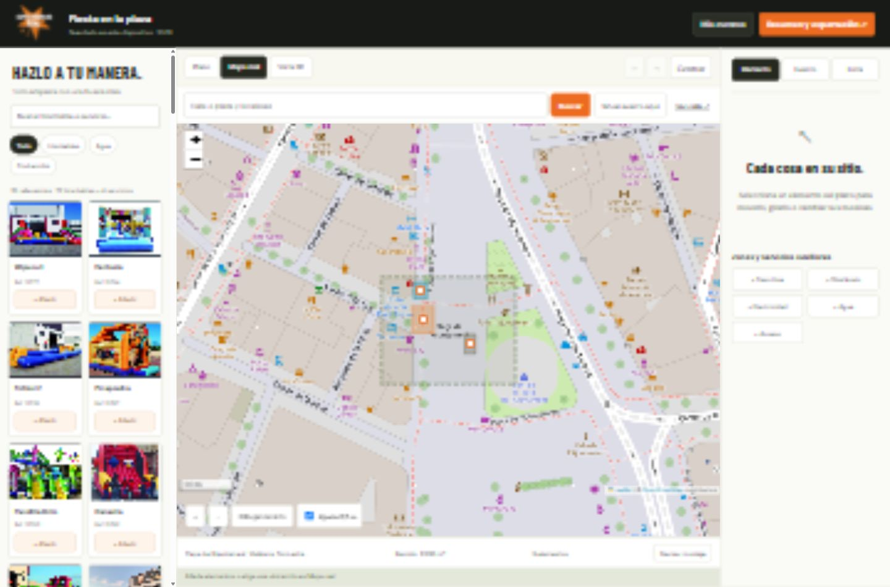

PROYECTO / DISEÑADOR DE EVENTOS 3D
Espectáculos Dani.
Una propuesta para preparar un evento antes de montarlo: explorar el catálogo de hinchables, distribuir los elementos en un recinto o sobre un mapa y visualizar el resultado en 3D.

Del catálogo al montaje.
El diseñador permite colocar y girar elementos, editar medidas, definir el recinto y sus obstáculos, y guardar el proyecto. El plano y la vista 3D ayudan a explorar distintas distribuciones del evento.
Estado: demo local de una propuesta de ITC. Esta ficha muestra el proyecto desarrollado; no es una plataforma oficial de reservas. Las medidas son orientativas y la disponibilidad y los precios requieren confirmación.
Volver al portfolio ↗